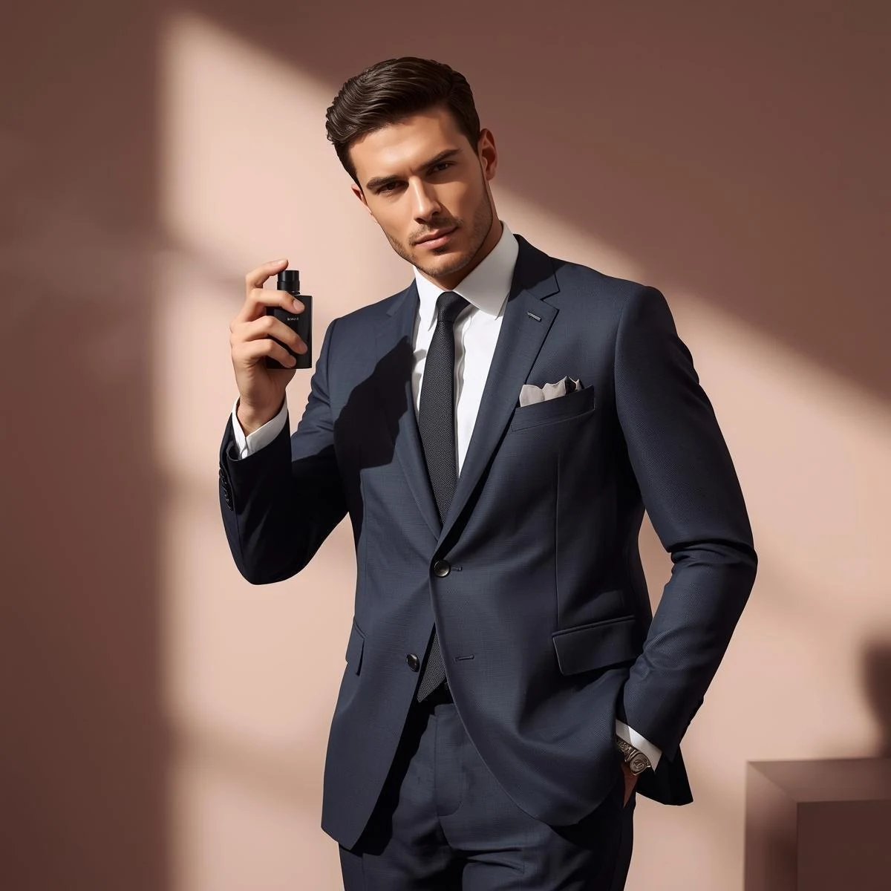

Seu estilo.
Sua história.
Seu destino.
Para homens que não querem usar apenas mais uma fragrância. Crie um perfume inspirado em uma cidade e nas notas que traduzem quem você é.


 THE ART OF ARRIVALNEW YORK · PARIS · TOKYO · MILANO
THE ART OF ARRIVALNEW YORK · PARIS · TOKYO · MILANOSua fragrância deveria dizer mais sobre você.
Muitos perfumes oferecem personalidade pronta. Mas suas lembranças, preferências e destinos não são iguais aos de ninguém.
“Um perfume pode ser mais que um aroma. Pode ser o lugar onde uma memória começa.”VOYAGE FOR MEN · ESSÊNCIA & IDENTIDADE
Não escolha apenas um perfume.
Crie o seu.
A proposta VOYAGE une destinos, composição olfativa e personalização para criar uma fragrância que leva a sua assinatura.
Escolha um destino
Paris, Nova York, Tóquio ou a cidade que mais representa a sua história.
Defina sua essência
Explore famílias olfativas e selecione as notas que combinam com seu estilo.
Assine a sua criação
Seu frasco recebe a identidade CIDADE by SEU NOME, com o universo visual de uma viagem.
Imagine sua próxima fragrância.
Uma prévia ilustrativa do conceito de personalização.
PARIS by VOCÊ
Mais que uma fragrância.
Uma experiência pessoal.
Identidade
Uma composição que conversa com suas preferências — em vez de apenas seguir tendências.
Memória
A experiência de associar aromas a lugares, momentos e histórias que fazem sentido para você.
Continuidade
O conceito de perfil digital permite guardar a composição, revisitar sua criação e facilitar futuras recompras.

O detalhe é a nossa assinatura.
A VOYAGE nasce de um conceito claro: transformar a personalização em uma experiência de perfumaria masculina premium, com linguagem visual reconhecível.
Design com propósito
Frasco azul-marinho, tampa dourada, avião em gravura vintage e carimbos de cidades: uma identidade coerente do produto à embalagem.
Personalização com continuidade
Conceito de catálogo, configurações salvas em perfil e possibilidade de compartilhar criações.
Transparência: a marca é um projeto em desenvolvimento. Não divulgamos números de clientes, prêmios ou tempo de mercado inexistentes.
Cada destino tem uma vibe própria.
Explore o mapa VOYAGE. Clique em um pin e descubra a atmosfera, o ritmo, os rituais e as notas que traduzem cada lugar — depois, leve essa vibe para o seu frasco.
Escolha um destino no mapa.
Cada pin revela a vibe completa do lugar: atmosfera, trilha sonora, estilo, rituais locais, intensidade e a pirâmide olfativa que o traduz em fragrância.
A próxima fragrância
pode levar seu nome.
Demonstre seu interesse pela VOYAGE FOR MEN e imagine uma criação feita para você. Preencha seus dados para entrar em contato por meio do formulário de interesse.
NEW YORK by JOÃO GUILHERME
Inicie sua jornada
Cadastre seu interesse para receber novidades sobre a VOYAGE FOR MEN.
Sua jornada,
sem dúvidas.
Tudo o que é importante saber antes de escolher o seu próximo destino olfativo.
O perfume é realmente personalizado?
A proposta da VOYAGE é permitir a escolha de destino, família olfativa e identificação do frasco. A disponibilidade exata das combinações será informada quando o serviço for lançado.
Posso salvar e comprar novamente a minha criação?
A plataforma está planejada para salvar presets em um perfil de cliente, facilitando consulta, compartilhamento e recompra. Trata-se de uma funcionalidade prevista no conceito.
Quanto custa uma fragrância VOYAGE?
Preços não foram definidos neste protótipo. Os valores devem ser divulgados antes de qualquer compra, juntamente com volume, composição e condições comerciais.
Qual é o prazo de produção e entrega?
O prazo dependerá do destino de entrega e da operação de produção. A informação precisa deverá aparecer na etapa de compra quando o serviço estiver ativo.
Existe garantia ou política de devolução?
As condições de troca, arrependimento e garantia precisam constar dos Termos de Uso e da política comercial definitiva, respeitando a legislação aplicável.
Como entro em contato com a marca?
Os canais oficiais de atendimento serão divulgados no lançamento. O formulário de interesse é encaminhado ao CRM externo; outros canais oficiais serão divulgados no lançamento.
Toda história tem um começo.
A sua tem um destino.
EVERY FRAGRANCE HAS A DESTINATION.
Começar minha jornada ↗